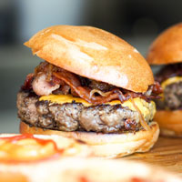

Not is our food good, it's also good-looking! Our patrons often stop to admire our fare with a quick Instagram before digging in. We've collected a few of our favorite shots here.
We start our day at the crack of dawn to bake our own muffins, bread, and dinner rolls. Loaves not used that day are donated to the local food shelter.

People come from all over to enjoy our lovingly made burgers. We grind our own locally-sourced organic beef and turkey so you know it's fresh and free from fillers and other nonsense. Go for one of our creative topping combos or stick with the classics.

Our chef works with local fisherman to pick the freshest the sea has to offer for our daily seafood special. Our Roast Cod Caponata with Roasted Potatoes is an old favorite with our regulars.

Our crispy, fried chicken wings are a classic and a must-try. Enjoy with our wide array of dipping sauces, ranging from mild to spicy.

Our handcut, specially seasoned, golden french fries go great with everything. We partner with local farmers to deliver the highest quality potatoes for our fries.

Our tabouleh salad is an instant favorite with our guests. Made with fresh parsley, tomatoes, mint, onion, and bulgur. Equal parts refreshing and delicious.